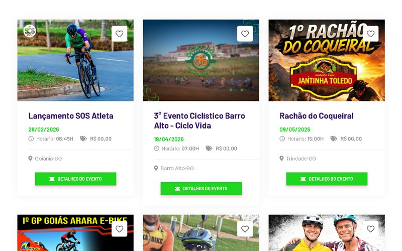
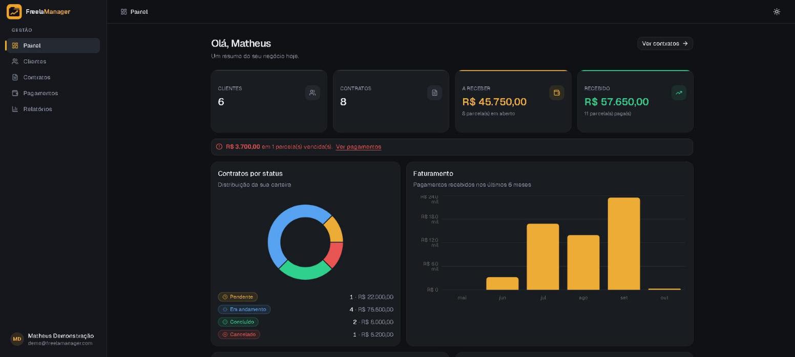
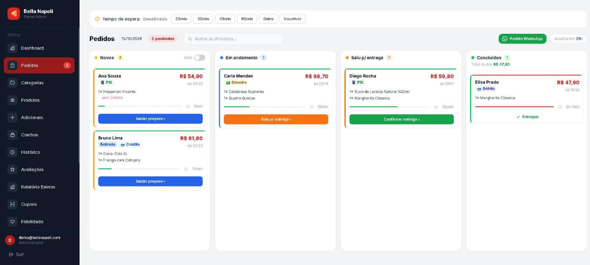
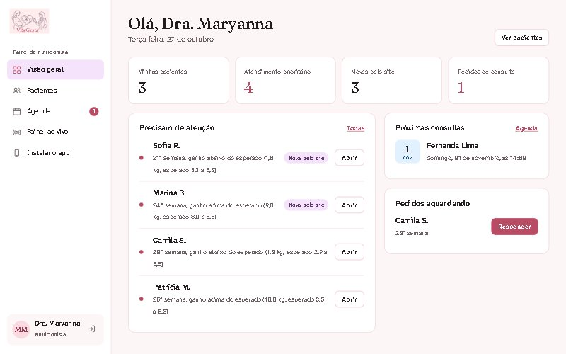
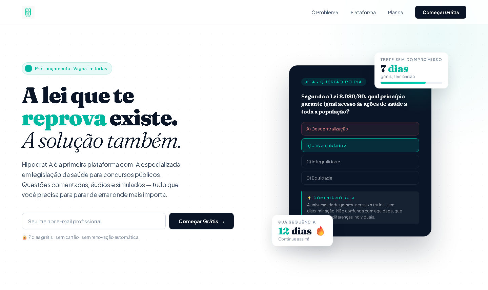

Goiânia apresenta
Dev full-stack júnior Em produção desde 2023. Seis projetos no ar.
Matheus Morais
Projetos
Um sistema que mantenho para cliente e cinco que construí por conta própria. Todos estão no ar.
-
Shopilot
Produto próprio · IA · em testes fechados
Métricas do TikTok explicadas por IA para criadores
SaaS que conecta a conta do TikTok por OAuth, coleta as métricas dos vídeos todo dia e usa IA (Gemini, com saída estruturada) para explicar por que um vídeo performou e o que testar no próximo. Tem fila de análises em segundo plano, assinatura mensal pelo Mercado Pago com webhook assinado, tokens cifrados, cotas por plano e painel administrativo com 2FA.
Python, FastAPI, PostgreSQL, Gemini
-

StudioSports
Cliente · freelance
Inscrições, PIX e SOS para provas esportivas
Sistema em produção que mantenho para um cliente: inscrição paga por PIX pela API do Itaú, painel do organizador com relatório financeiro e apuração ao vivo, tag SOS com QR Code que avisa os contatos do atleta pelo WhatsApp e classificados de bikes. O código é do cliente.
PHP, MySQL, jQuery, Pix Itaú
-

FreelaManager
Full-stack · código aberto
Clientes, contratos e recebimentos para freelancers
API em Express com JWT, PostgreSQL via Prisma e front em React. 95 testes rodam no CI a cada commit. Tem landing page e conta de demonstração que entra com um clique.
React, Express, PostgreSQL, Prisma
-

Bella Napoli
PHP · código aberto
Delivery para pizzaria, do cardápio ao kanban
Pedido pelo celular com cupom, fidelidade e QR Code de mesa; a pizzaria acompanha tudo num kanban. Antes de publicar, revisei a segurança e corrigi XSS, CSRF e acesso a pedidos de terceiros.
PHP 8, MySQL, JavaScript, Tailwind
-

VitaGesta
Trabalho acadêmico · código aberto
Ganho de peso na gestação, com nutricionista
Calcula o IMC gestacional pela recomendação do IOM e, se o ganho sai da faixa, encaminha a gestante a nutricionistas. Ela registra o peso e recebe o plano alimentar; a nutricionista tem painel, agenda e fichas. Painel ao vivo para a apresentação do grupo.
PHP 8, MySQL, JavaScript, PWA
-

HipocratIA
Produto próprio · pré-lançamento
Legislação da saúde para concursos, com IA
Questões comentadas por IA, simulados e assinatura pelo Mercado Pago, sobre um MVC próprio em PHP 8.1 com cerca de 30 mil linhas. Está no ar, ainda sem assinantes; o código é privado.
PHP 8.1, MySQL, Claude API, Mercado Pago
Também há repositórios de estudo de POO e princípios SOLID em Java. Todos os repositórios
Sobre
Comecei em 2023 e passei a maior parte desse tempo dentro de sistemas que já existiam: código legado, banco cheio de dado real e usuário esperando do outro lado. Foi assim que aprendi a ler antes de escrever.
Até outubro de 2026 trabalhei na ASSEGO, uma associação com cerca de 9 mil associados, mantendo e criando os sistemas internos usados por mais de 100 funcionários: contratos, financeiro, relatórios, cobrança e o aplicativo dos associados. No último ano lá passei a atuar também em Java corporativo (Java 7/8 em JBoss EAP) e em telas Angular — em nível inicial, mas já entregando manutenção com autonomia. Hoje atendo como freelancer a StudioSports, plataforma de inscrições para provas esportivas, e cuido do sistema inteiro: do pagamento por PIX ao painel do organizador.
Sou formado em Análise e Desenvolvimento de Sistemas pelo Senac Goiás e tenho certificado de inglês nível B2 pelo Centro de Línguas da UFG (480 horas), além de vivência na Alemanha. Procuro uma vaga de desenvolvedor júnior onde eu possa aprofundar essa stack e crescer junto com um time que revisa código.
- Disponibilidade
- Imediata, em Goiânia ou remoto
- Experiência
- Desde 2023, em três empresas
- Formação
- Análise e Desenvolvimento de Sistemas, Senac Goiás
- Idiomas
- Português nativo, inglês B2
Experiência
Do mais recente ao mais antigo.
-
08/2026 — atual
Desenvolvedor Full-Stack
StudioSports
Plataforma de inscrições para provas esportivas (freelance)
- Manutenção e evolução do sistema inteiro em PHP e MySQL: inscrições, lotes de preço, cupons e provas em dupla.
- Pagamento por PIX pela API do Itaú, com conferência automática e histórico de cobranças.
- Avisos automáticos por WhatsApp: recuperação de senha, alerta do SOS Atleta para os contatos de emergência e lembrete do evento.
- Painel do organizador com inscritos, relatório financeiro, PDF do acerto, apuração ao vivo e rastro de acessos com marca d’água.
- Revisão de segurança: controle de acesso em todas as telas administrativas, sessões assinadas e CPF mascarado nas exportações (LGPD).
-
01/2025 — 10/2026
Estagiário de Desenvolvimento
ASSEGO
Associação dos Subtenentes e Sargentos do Estado de Goiás
- Sistema de gestão de contratos com fluxo de aprovação, geração de PDF e histórico de alterações.
- Sistemas de gestão, dashboards e relatórios usados por mais de 100 funcionários do administrativo e do financeiro, com filtros e exportação em PDF/Excel.
- Integração com as APIs de pagamento do Sicoob e do Itaú: emissão de boletos, retorno de pagamentos e rotinas de cobrança.
- PWA usado por cerca de 9 mil associados, com foco em responsividade e uso no celular.
- Manutenção em aplicações Java 7/8 em JBoss EAP 6 e 7 e correções em telas Angular.
- Modelagem MySQL/PostgreSQL, versionamento com Git e deploy em Linux.
-
07/2023 — 04/2024
Estagiário de Desenvolvimento
JHON CODE
Agência de desenvolvimento web
- Sistemas web sob medida para diversos clientes, do banco ao front.
- Painéis administrativos para que o cliente gerenciasse o próprio conteúdo sem depender de dev.
- Autenticação segura: hash de senha, sessões e controle de acesso por perfil.
- Modelagem de banco e diagramas de sistema antes de escrever código.
-
01/2023 — 06/2023
Estagiário de Desenvolvimento
FIO GUIA
Controle financeiro para médicos
- Primeiro contato profissional com desenvolvimento, em produto financeiro real.
- SQL, Flutter e integração de APIs no aplicativo dos clientes.
- Fluxos de automação de conversas no WhatsApp com Manychat.
-
01/2023 — 06/2025
Análise e Desenvolvimento de Sistemas
Faculdade Senac Goiás
Formação concluída
- Engenharia de software, qualidade de software, banco de dados e metodologias ágeis.
-
Concluído em 2026
Inglês, nível B2
UFG
Centro de Línguas da Universidade Federal de Goiás
- 480 horas, nível B2 do Quadro Comum Europeu.
- Vivência na Alemanha.
Sistemas em produção
Esta cena não tem imagens: são sistemas internos, então não há link público. Aqui está o problema que cada um resolve e com o que foi feito.
-
Gestão de contratos
Cadastro, fluxo de aprovação em etapas, geração de documento em PDF e histórico completo de alterações. Substituiu um processo que vivia em planilha e e-mail.
PHP, MySQL, JavaScript, PDF
-
Dashboards gerenciais
Relatórios para o administrativo e o financeiro com filtros combinados e exportação em PDF e Excel — o que antes exigia pedir número para o TI.
React, TypeScript, PostgreSQL
-
Integração Sicoob e Itaú
Emissão de boletos, leitura do retorno de pagamento e rotinas automáticas de cobrança. A parte do sistema que não pode errar valor nem data.
PHP, APIs REST, Webhooks, MySQL
-
PWA do associado
Aplicativo instalável usado por cerca de 9 mil associados para acessar seus dados pelo celular, com layout pensado primeiro para tela pequena.
Next.js, TypeScript, PWA
-
Automação de rotinas internas
Importação de arquivos, geração de relatórios agendada e disparo de e-mail com PHPMailer. Horas de trabalho manual por mês que deixaram de existir.
PHP, Cron, PHPMailer, Linux
-
Manutenção de legado Java
Deploy de WAR, ajuste de datasource e investigação de erro por log em Java 7/8 sobre JBoss EAP 6 e 7, além de correções em telas Angular.
Java 7/8, JBoss EAP, Angular
Cena sem filmagemSistemas internos, sem link público
Ferramentas
Utilitários de pagamento que qualquer pessoa pode usar. Rodam no navegador, sem enviar dados, com as mesmas regras das integrações bancárias que faço no trabalho.
-
Gerador de Pix copia e cola e QR Code
Monta o código no padrão BR Code do Banco Central, com CRC16, e lê um código recebido para conferir se ele foi alterado.
JavaScript, BR Code, CRC16, QR Code
-
Validador de boleto
Confere os dígitos verificadores em módulo 10 e 11, identifica banco, valor e vencimento, e desenha o código de barras Intercalado 2 de 5.
JavaScript, FEBRABAN, módulo 10 e 11, ITF
-
Leitor de arquivo de retorno CNAB
Abre o retorno de cobrança do banco e mostra quem pagou, quanto foi creditado e o que foi rejeitado, conferindo os totais do trailer. CNAB 240 e 400 do Itaú.
JavaScript, CNAB 240/400, FEBRABAN, CSV
Tecnologias
Agrupadas pelo quanto eu uso hoje, com o lugar onde cada uma entrou no trabalho.
Domínio sólido
- PHP
- Base dos sistemas internos da ASSEGO e de todos os projetos de cliente na JHON CODE: gestão de contratos, rotinas de cobrança, geração de PDF e envio de e-mail com PHPMailer.
- TypeScript
- Linguagem padrão do front das aplicações novas. Tipagem dos contratos de API de pagamento evitou boa parte dos erros de integração com Sicoob e Itaú.
- JavaScript
- Front-end desde 2023: painéis administrativos, validação de formulários, tabelas dinâmicas e exportação de relatórios direto no navegador.
- HTML & CSS
- Layout responsivo em tudo que entrego, com atenção a acessibilidade básica e a telas de celular — este site inclusive, escrito à mão.
Uso diário
- React
- Interfaces dos dashboards gerenciais: filtros combinados, tabelas com muitos registros e exportação em PDF/Excel para as áreas administrativa e financeira.
- Next.js
- PWA dos associados — rotas, autenticação, cache offline e foco total em uso no celular, que é onde os associados realmente abrem o sistema.
- MySQL
- Modelagem e manutenção das bases dos sistemas internos: histórico de alterações de contratos, conciliação de pagamentos e queries de relatório.
- PostgreSQL
- Base das aplicações mais novas. Uso de views e funções para consolidar relatórios financeiros sem pesar no front.
- Docker
- Padronização dos ambientes de desenvolvimento para que PHP, banco e serviços subam iguais na minha máquina e no servidor.
- Linux
- Deploy e operação dos sistemas: permissões, cron, leitura de log, FTP/SFTP e diagnóstico quando algo cai fora do horário.
- Git
- Versionamento em todos os projetos, branches por demanda e histórico limpo — inclusive em bases que não tinham controle nenhum antes.
Nível inicial
- Java
- Java 7 e 8 em sistemas legados: leitura de código existente, correção de rotinas e ajustes pontuais. Nível inicial, com apoio da equipe.
- Spring Boot
- Estudo dirigido e projetos próprios de API REST, para chegar preparado nas demandas de back-end Java do time.
- Angular
- Correções em telas de sistemas já existentes: componentes, formulários e chamadas de serviço. Primeiro contato, feito com apoio da equipe.
- Flutter
- Na FIO GUIA, telas do app de controle financeiro para médicos, consumindo API e integrando com o fluxo de atendimento.
- JBoss EAP
- EAP 6 e 7: deploy de WAR, ajuste de datasource e leitura de logs para investigar erro em produção.
Certificados
Formação e cursos. Clique em um certificado para ampliar.
Também concluí cinco cursos curtos do IFRO pela Cursa em 2025: Programação para Web, Análise e projeto de sistemas, Lógica de programação, Banco de dados e Estrutura de dados.
Procurando um desenvolvedor júnior que já colocou sistema em produção?
Posso começar imediatamente, presencial em Goiânia ou remoto. Respondo em até um dia útil.
- +55 62 99201-4463
- in/arantes-matheus
- GitHub
- MatheusMorais1234